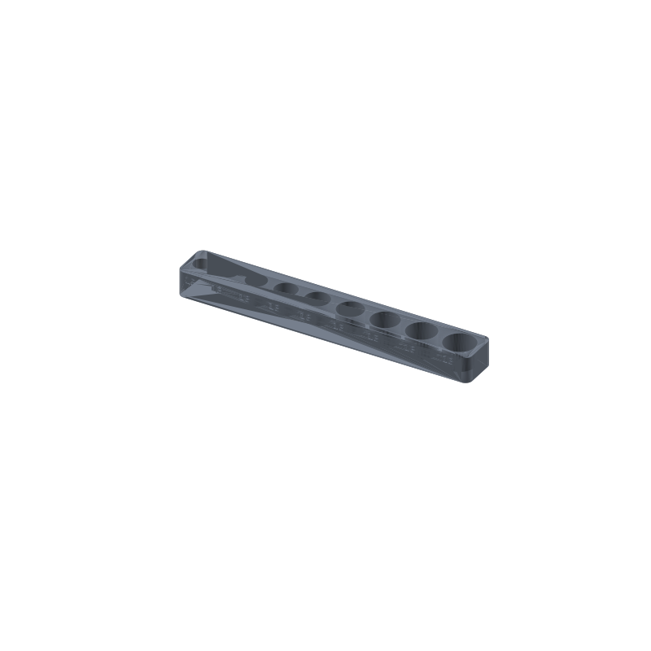

Socket size tray STL, 1/4 inch drive metric 5-13 mm
Loose 1/4 inch drive sockets settle face down in the drawer and the size markings end up hidden or worn off. This tray stands them head-up, one blind pocket per size from 5 to 13 mm, so a missing size shows as an empty slot at a glance. The size digits are debossed 0.6 mm into the front wall, printed as part of the tray, so the label cannot peel or wear off like a sticker.
The fit rule does the sorting: each pocket bore is cut to the nominal across-flats plus 5 mm. That margin covers the across-corners measurement of a hex socket and the thickness of its chrome wall, so only the matching socket seats in its pocket. The 8 fits the 8 pocket and nothing else. Nine pockets, nine sizes, and the row reads left to right.
This page carries the measured spec sheet: dimensions taken from the mesh, the pockets ray-scanned against the export, and preview renders, so you can check the numbers before you slice.

The STL is one material and prints in one color; the renders shade the walls by light angle so the pockets and digits read as geometry, not paint.
Spec sheet, measured from the mesh
| Spec | Value |
|---|---|
| As exported | One solid tray 172 × 24 × 15 mm, 4 mm rounded corners |
| Pockets | Nine blind Ø bores, one per size 5-13 mm, bore = across-flats + 5 mm (10-18 mm), depth 12 mm |
| Fit | Only the matching socket seats per pocket; across-corners and the chrome wall are covered by the 5 mm add |
| Walls | 3 mm end walls, 5 mm between pockets |
| Floor | 3 mm solid under all nine pockets (ray-verified) |
| Labels | Size digits debossed 0.6 mm into the front wall, 5 mm tall, printed as part of the tray |
| Volume | 44.48 cm³ ≈ 55 g PLA solid, less at typical infill |
| Flat on the plate, no supports, no bridges; about 2 h at 0.2 mm layers (geometry estimate) | |
| Mesh check | Watertight, winding consistent, euler 2, 6048 faces (trimesh 5.1.0, 2026-09-10) |
| Files | STL (302 KB) and 3MF (70 KB) plus the parametric generator script gen_sockettray16.py |
| Params | afs size list, bore_add 5, pocket_d 12, floor_t 3, wall 3, gap 5, corner_r 4, digit_h 5, digit_depth 0.6 |
| License | CC-BY 4.0 on MakerWorld; royalty free, no AI training, direct from us |
How the pockets were verified
The pocket numbers came off the exported mesh, not the parameter sheet. A ray scan across the tray at mid-depth, on a 0.25 mm step, measured all nine bores: the widths land at 10 through 18 mm, exactly across-flats plus 5 for each size in the 5-13 mm list, and every bore floor sits 12.0 mm below the tray top. The floor reads solid under all nine pockets, and the walls between pockets measure 5 mm, matching the generator layout.
What that means at the bench: the sockets stand in their own column, the digits line up above their pockets on the front wall, and nothing goes all the way through, so the tray keeps its strength even if a pocket runs a fraction wide. The end walls run about 3 mm, enough to keep the first and last pockets from feeling fragile.
Every wall in this part is vertical and every surface is either flat on the plate or a vertical extrusion, so nothing needs supports and there are no bridges. The pockets are blind holes from the top with solid floor below, and the digits are shallow recesses in the front wall.
Print notes
Print the file as exported, flat on the plate: blind pockets with solid floor, digits as shallow recesses, no overhangs, so the slicer needs no supports and no brim beyond plate adhesion. 0.2 mm layers and three perimeters are a reasonable default.
I have not test-printed this one yet. If you print it, tell me how your sockets seat. The knobs are in the generator: afs for the size list, bore_add for the clearance, and pocket_d for the pocket depth. Full-height 1/4 inch drive sockets clear the tray top with the heads up; deep sockets sit lower but stay above the 3 mm floor and remain grabbable. A first layer that squashes 0.2 mm eats into the clearance, so if a socket seats tight, raise bore_add to 5.5 and rerun.
The generator (gen_sockettray16.py) takes the size list, bore clearance, pocket depth, floor, walls, and digit size as parameters. Change the sizes and the footprint, walls, and digits recompute around them, so a different set is a number change, not a redesign.
Honest limits
The 2 hour print figure is a geometry estimate from the mesh volume, not a timed print, and the tray is mesh-verified but untested on a printer. The seat check that matters, whether a 12 mm pocket holds each socket at a grabbable height, is the first thing to confirm on a real print.
PLA is fine for a tray that lives in a climate-controlled room, but a garage that hits summer heat can creep it. For a hot garage, print the same generator output in PETG. Keep the tray out of direct sun on a windowsill for the same reason.
This tray covers 1/4 inch drive, 5-13 mm. For 3/8 inch or 1/2 inch drive, change the afs list in the generator: the bores grow with the sockets, and the tray gets longer to keep the 5 mm walls between them.
Where to get the files
The socket size tray is staged on our MakerWorld account and goes public on our profile once it is submitted and clears review.
More printed organizers and bench tools, with a status table for the pool: 3D printed desk organizers and printable tools. The rebuild-everything approach, generator parameters per model side by side: parametric 3D printed tools.
Compare all 20 models by solid mesh volume in the STL volume ledger.
FAQ
Why is the pocket 5 mm bigger than the socket size?
Because the across-flats number is not the widest part of a socket. Measured corner to corner, a hex socket runs wider than its nominal size, and the chrome wall adds more. The 5 mm add covers both, with the side effect that makes the tray work: only the matching socket seats in its pocket, so the 8 cannot hide in the 9 slot and a missing size reads as an empty hole.
Will deep sockets fit?
Full-height 1/4 inch drive sockets clear the tray top with the heads up. Deep sockets sit lower in the same pocket but stay above the 3 mm floor, so the top still clears the rim and you can get a grip on them. The pockets are the same bore either way, so nothing about the layout changes.
Can I add sizes or make it for 3/8 inch drive?
Yes. Edit the afs list in gen_sockettray16.py and rerun it. The bores, walls, digit positions, and total footprint recompute from the list, so a 3/8 inch set or a longer metric run comes out as a new STL with the same fit rule and the same debossed labels.